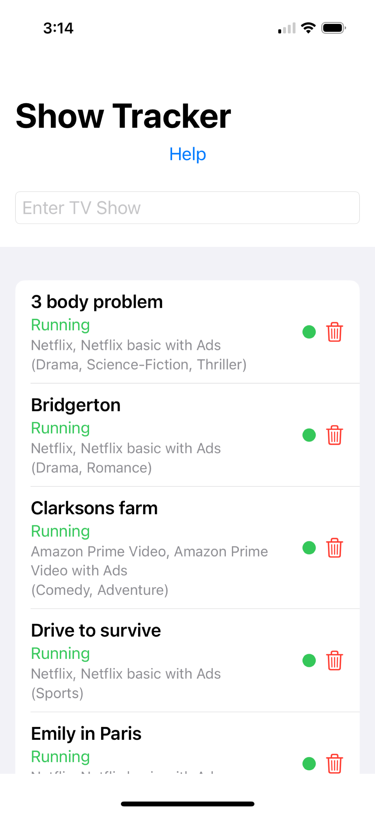
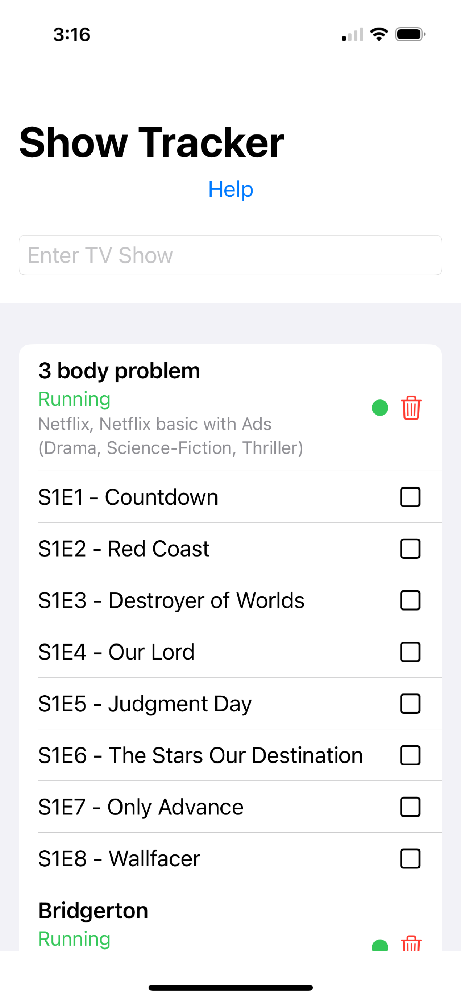
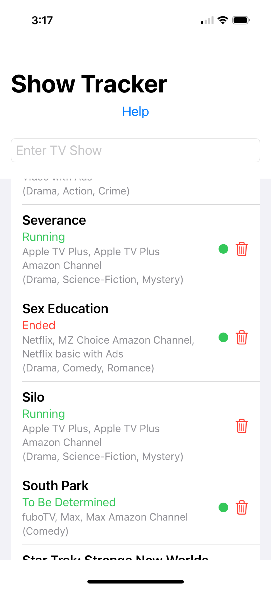
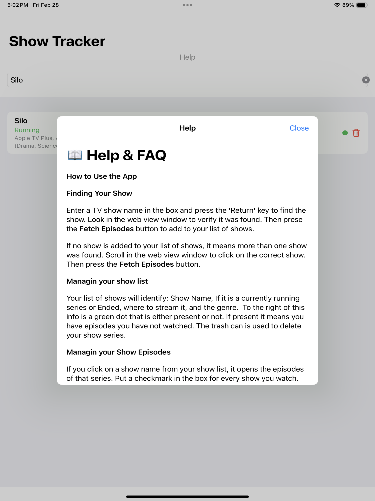

Start tracking your shows today.
Free to download. No account needed. Works great on iPhone and iPad.
Download on the App StoreSearch any TV show or movie, track your episodes, see where to stream — and never lose your place again. Simple, fast, and syncs across all your devices via iCloud.


No complicated setup. No accounts. Just open the app and start tracking.
Type a show or movie title and press Return. Pick your result from the list.
Tap Fetch Episodes to download all seasons and episodes automatically.
Tap an episode to mark it watched. A green dot means you still have episodes to catch up on.
Every saved show displays its name, running status, where to stream it, and genre — all on one clean list. No hunting around.
Tap any show to expand its full episode list. Check off each episode as you watch it. Your progress saves automatically — no syncing button to tap.
Shows you're watching get a color-coded status so you always know if there's more coming, if it's over, or if its fate is still up in the air.

Show Tracker is designed for both. The iPad layout gives you more space to browse your list, track episodes, and dive into the built-in help — all in a clean, spacious interface.

Search TV shows and movies by title. Results come back fast with poster, year, runtime, and streaming providers.
Track both TV series and movies in the same app. Switch between them with a simple toggle at the top.
Your watchlist syncs across all your devices automatically via iCloud. Start on your iPhone, continue on your iPad.
New season just dropped? Tap Refresh All Shows to pull in the latest episodes and metadata for everything in your list.
See exactly where to watch each show — Netflix, Apple TV+, Prime, Max, Hulu, and more — right in the list.
Delete shows with a confirmation prompt — no accidental deletions from a stray tap.
Free to download. No account needed. Works great on iPhone and iPad.
Download on the App Store